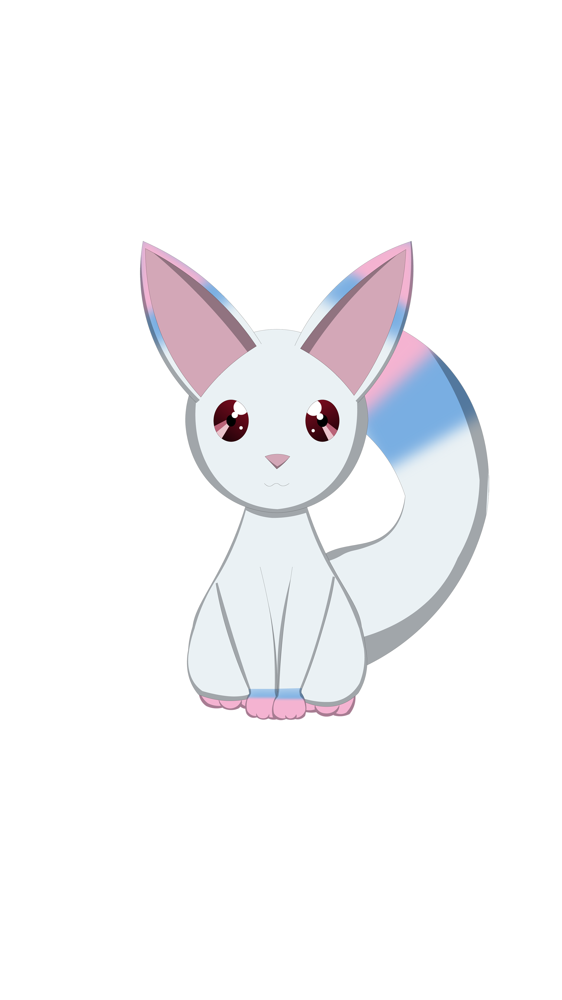
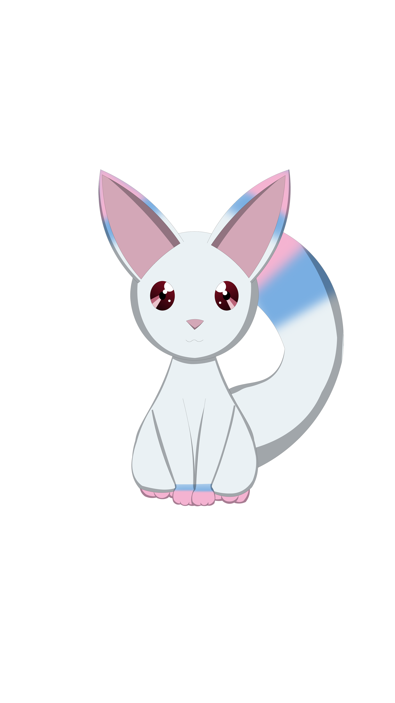

Episode 3
I pushed passed both my mother and brother. I could hear them protesting as I slid the backdoor open and ran toward the pool.
I was stopped at the edge by a strange creature surrounded by strange lights.
 

Mysterious CreatureYou shouldn't throw your life away!
YuiW-what are you!?
White KitsuneI'm just a kitsune.
White KitsuneI've been watching you.

YuiY-you've been watching me?
White KitsuneKids can be very cruel.
White KitsuneI don't have to tell you that though.
YuiWhat do you want from me?
White KitsuneYou misunderstand, Miss Yui Sakano. There isn't anything I want from you, rather, I have a gift for you.
I slipped my socks off and sat at the edge of the pool, my feet dangling in the water.
I didn't know if this creature was real, or what it could possibly be talking about.
All I knew was, this was the first time I felt at ease since my dad died.
I forgot what it was that I wanted to do just a few moments ago.
YuiA gift...
Yuijust for me?
White KitsuneIt isn't a gift you can hold in your hands.
White KitsuneIts a gift for your heart.

YuiFor my heart?
White KitsuneAll that's happened to you lately.
White KitsuneIt really hurts, right?
White KitsuneMiss Yui, do you have anything you truly desire?
White KitsuneIf so, what is it?
I tried to really think about what the strange creature, which called itself a kitsune, was saying.
It really did hurt.
My heart, my mind, it all really hurt.
I wanted it all to end, but this kitsune had a gift for me...
A gift just for me.
Maybe something to take the hurt away...
What was it that I really wanted? What did I truly desire?
I thought about that for awhile.
I felt I needed the answer to get the gift this kitsune had, but I didn't really know what I wanted.
I thought about all that happened since daddy died. Everything got so much worse.
The words left my mouth before I really thought about them...
YuiI want my dad back.
White KitsuneI sense a lot of potential in you, but, sadly, I don't think its enough to turn back time or raise the dead.
YuiOh, I thought so.
Yui...
YuiThen what about making everyone get along?
White KitsuneIs that what you really want? Will that desire make your soul shine?
YuiI don't know about all that, but I think it'll make me happy.
White KitsuneIs something like that worth your life?
Suddenly I remembered why I had run out here.
Once I did, I wanted to ask this creature if it had meant the life I was about to throw away.
Of course, I didn't even know if it knew why I had run outside.
But I started thinking, how much is this life of mine really worth right now?
Would it be worth trading my life now, for a few more moments of happiness?
How could a fifth-grader be expected to answer that!?
In the end, all I did was nod.
White KitsuneIt may be hard for you to see now, but, you're special, Miss Yui.
White KitsuneNevertheless, if the happiness of others is something you want to fight for, then I won't stop you.
YuiSomething I want to fight for?
White KitsuneWe kitsune offer girls like you the power to fulfill their own desires, but we don't give that power freely.
White KitsuneWe expect you to fight for us.
White KitsuneSo, Miss Yui Sakano, is the happiness of others what you truly desire?
White KitsuneIs it worth fighting for?
White KitsuneIs it worth dying for?
White KitsuneWill you make a contract with me?
- Will you make a contract with me?
- I will!